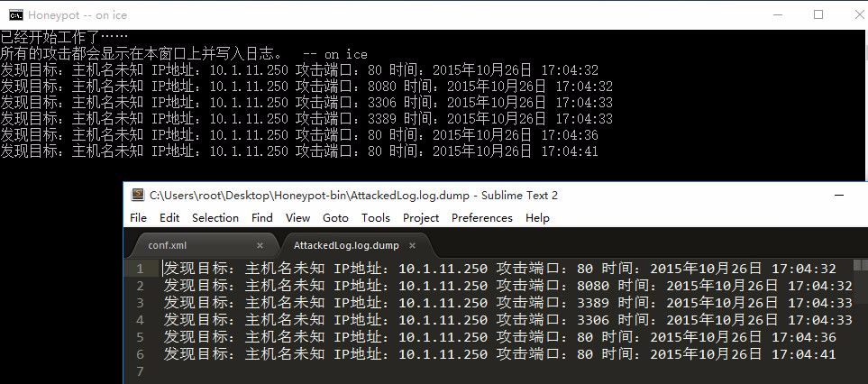

木马哥的蜜罐教程
蜜罐好比是情报收集系统。蜜罐好像是故意让人攻击的目标，引诱黑客前来攻击。当攻击者尝试进行入侵，你就可以知道他的来源地址，但并不会对真实系统造成伤害。该项目是用Java编写的小型蜜罐系统，通过该教程你可以很方便地侦测和记录一些来自于网络上的攻击。
接下来，我将搭建一台模拟运行：Web容器，Mysql数据库,代理服务，远程桌面服务的主机。
其中，各项服务对应的端口号为：80,3306,8080,3389
蜜罐的下载地址为：https://coding.net/u/hack4b/p/Mini-Honeypot/git/raw/master/Honeypot-bin.zip
项目主页为：https://github.com/horsebro1/Mini-Honeypot
注意：蜜罐的运行环境依赖JVM。因此，你必须安装JRE，即Java的运行环境。JVM的下载地址为：http://www.java.com
解压Honeypot-bin.zip，你将会得到conf.xml。该文件是蜜罐系统的配置文件，根据上述需求，我们修改配置文件如下：
<?xml version="1.0" encoding="UTF-8"?>
<Honeypot-conf>
<!-- 指定蜜罐系统开放的端口，多个端口用逗号(,)分隔。 -->
<Honeypot-port>80,8080,3306</Honeypot-port>
<!-- 指定蜜罐系统的日志文件，支持绝对路径，Windows系统下文件分割符请使用："\\" -->
<Honeypot-log>AttackLog.log</Honeypot-log>
<!-- 指定蜜罐发送的消息 -->
<Honeypot-message>The connect reset.</Honeypot-message>
</Honeypot-conf>如果你需要指定日志文件名，请修改尖括号对的内容。下面的配置文件展示了将日志文件名重命名为15-10-12.log，直接指定文件名，该文件会保存在程序的运行目录下。如果你想保存到其他地方，请指定程序的绝对路径。注意：Windows系统的文件分割符需使用”\”，例如：”D:\logfile\logfile.log”
<Honeypot-log>15-10-12.log</Honeypot-log>在配置文件中，你可以指定蜜罐向攻击者发送的消息，下面的例子说明蜜罐向攻击者发送”Hello Man!”。当蜜罐开放的端口遭受到攻击，蜜罐将会发送该消息。如果留空，当蜜罐开放的端口遭受到攻击，蜜罐将会立即断开连接。
<Honeypot-message>Hello Man!</Honeypot-message>至此，配置文件配置好后，我们运行start.bat启动蜜罐(如果是Linux系统，请运行start.sh)。你将会得到如下窗口：
注意：如果该窗口出现闪退，你应当检查配置文件和当前端口的占用情况，以及更新你现有的Java版本。这通常是由于版本过低和端口冲突造成的。蜜罐始终会显示该窗口，直到你关闭蜜罐（关闭窗口）。有关错误的详细信息，你可以运行debug.bat文件。Linux系统请使用管道输出错误信息。
接下来，我将启动KaliLinux并运行Nmap对蜜罐主机进行端口探测，探测的结果如下：
我们可以看到，Nmap成功探测到蜜罐主机所开放的端口。如果我们尝试访问端口，蜜罐将会拒绝访问：
至此，我们来看看蜜罐的工作情况，蜜罐已经为我们记录下了攻击者的信息并写入了日志文件：

通常，某些访问请求的数据包是不携带主机名信息的。因此你只能看到远程主机的IP地址。
以下是我设想的一些该蜜罐系统的使用场景：
1.你可以不用上线真实的业务系统，从而诱使攻击者暴露他的地址信息。
2.你可以配置蜜罐的返回消息逗攻击者玩，例如攻击者尝试攻击你的电脑，他会收到：“Stupid Man!”，不过在此之前你需要把这句话加入到配置文件。
3.你可以把蜜罐主机完全暴露给外网，以此来测量主机受攻击的频率。
但是扫端口号的人每天都好多，特别是在知名的云上面，拿到IP也没啥用